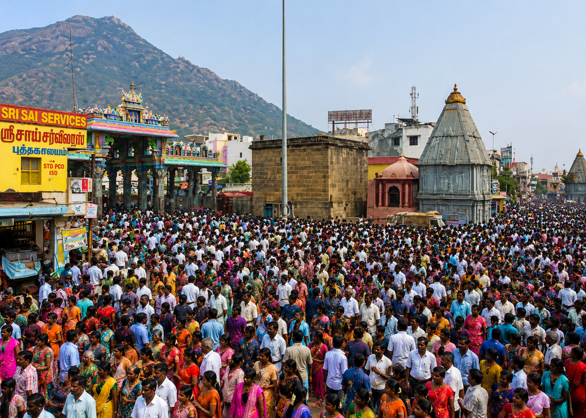

🗺 Girivalam Route Map
Tiruvannamalai Girivalam is a sacred 14 KM walking route around Arunachala Hill. Devotees walk around the hill and visit the 8 Ashta Lingams for spiritual blessings. This route helps devotees complete Girivalam with proper direction and guidance.
🗺 Start 14 KM Girivalam Navigation


🚶 Girivalam Route Distance & Walking Time
| From | To | Distance | Time |
|---|---|---|---|
| 🛕 Arunachaleswarar Temple | 🕉️ Indra Lingam | 1.5 KM | 20 min |
| 🕉️ Indra Lingam | 🔥 Agni Lingam | 2.0 KM | 25 min |
| 🔥 Agni Lingam | ⚖️ Yama Lingam | 1.8 KM | 22 min |
| ⚖️ Yama Lingam | 🛡️ Niruthi Lingam | 1.7 KM | 20 min |
| 🛡️ Niruthi Lingam | 🌊 Varuna Lingam | 2.0 KM | 25 min |
| 🌊 Varuna Lingam | 🌬️ Vayu Lingam | 1.8 KM | 22 min |
| 🌬️ Vayu Lingam | 💰 Kubera Lingam | 1.5 KM | 18 min |
| 💰 Kubera Lingam | 🕉️ Esanya Lingam | 1.2 KM | 15 min |
| 🕉️ Esanya Lingam | 🛕 Arunachaleswarar Temple | 0.5 KM | 8 min |
| TOTAL | 14 KM | 3.5–4.5 Hours | |
📌 Route Summary
📍 Starting Point: Arunachaleswarar Temple
🏁 Ending Point: Arunachaleswarar Temple
📏 Total Distance: 14 KM
🚶 Average Walking Time: 3.5 – 4.5 Hours
🕉️ Total Ashta Lingams: 8
💧 Drinking Water • 🍛 Anna Prasadam • 🪑 Rest Areas • 🚻 Public Toilets are available at various locations along the Girivalam route.
🕉 8 Ashta Lingams Information
🕉 1. Indra Lingam
📍 Location:
Indra Lingam is located on the eastern side of the sacred Girivalam path around Arunachala Hill.
It is the 1st of the eight Ashta Lingams visited by devotees during the 14 KM Girivalam pilgrimage.
🙏 Significance:
This Lingam is associated with Lord Indra, the King of the Devas. Devotees believe that worshipping
Indra Lingam with devotion brings success, prosperity, confidence, and removes obstacles from life.
It is considered an auspicious place to begin the Girivalam journey.
🔥 2. Agni Lingam
📍 Location:
Agni Lingam is situated on the south-east side of the Girivalam path around Arunachala Hill.
It is the 2nd Ashta Lingam visited by devotees during the Girivalam pilgrimage.
🙏 Significance:
This Lingam is associated with Lord Agni, the God of Fire. Devotees believe that worshipping
Agni Lingam helps purify the mind, remove negative energy, increase courage, and bring positive
strength into life.
⚖️ 3. Yama Lingam
📍 Location:
Yama Lingam is located on the southern side of Arunachala Hill along the Girivalam route.
It is the 3rd Ashta Lingam visited during the 14 KM Girivalam walk.
🙏 Significance:
This Lingam is associated with Lord Yama, the God of Dharma and Justice. Devotees worship
Yama Lingam for good health, long life, discipline, protection from fear, and strength to live
a righteous life.
🛡️ 4. Niruthi Lingam
📍 Location:
Niruthi Lingam is situated on the south-west side of Arunachala Hill on the Girivalam path.
It is the 4th Ashta Lingam visited by devotees during Girivalam.
🙏 Significance:
This Lingam is associated with Lord Niruthi, the guardian of the south-west direction.
Devotees believe that worshipping Niruthi Lingam removes negative energies, protects from
difficulties, and brings peace, stability, and spiritual protection.
🌊 5. Varuna Lingam
📍 Location:
Varuna Lingam is located on the western side of Arunachala Hill along the sacred Girivalam route.
It is the 5th Ashta Lingam visited during the Girivalam pilgrimage.
🙏 Significance:
This Lingam is associated with Lord Varuna, the God of Water. Devotees worship Varuna Lingam
for peace, emotional balance, purity, family harmony, and a calm state of mind.
🌬️ 6. Vayu Lingam
📍 Location:
Vayu Lingam is situated on the north-west side of Arunachala Hill on the Girivalam route.
It is the 6th Ashta Lingam visited by devotees during the sacred walk.
🙏 Significance:
This Lingam is associated with Lord Vayu, the God of Wind. Devotees believe that worshipping
Vayu Lingam improves health, strengthens life energy, supports breathing wellness, gives peace
of mind, and helps spiritual growth.
💰 7. Kubera Lingam
📍 Location:
Kubera Lingam is located on the northern side of Arunachala Hill along the Girivalam path.
It is the 7th Ashta Lingam visited during the 14 KM Girivalam pilgrimage.
🙏 Significance:
This Lingam is associated with Lord Kubera, the God of Wealth. Devotees worship Kubera Lingam
seeking financial stability, prosperity, business success, growth, good fortune, and abundance
in life.
🕉️ 8. Esanya Lingam
📍 Location:
Esanya Lingam is located on the north-east side of Arunachala Hill and is close to the completion
of the Girivalam route. It is the 8th and final Ashta Lingam visited during Girivalam.
🙏 Significance:
This Lingam is associated with Lord Esanya, the guardian of the north-east direction.
Devotees believe that worshipping Esanya Lingam brings wisdom, spiritual knowledge, inner peace,
devotion, and guidance towards moksha.